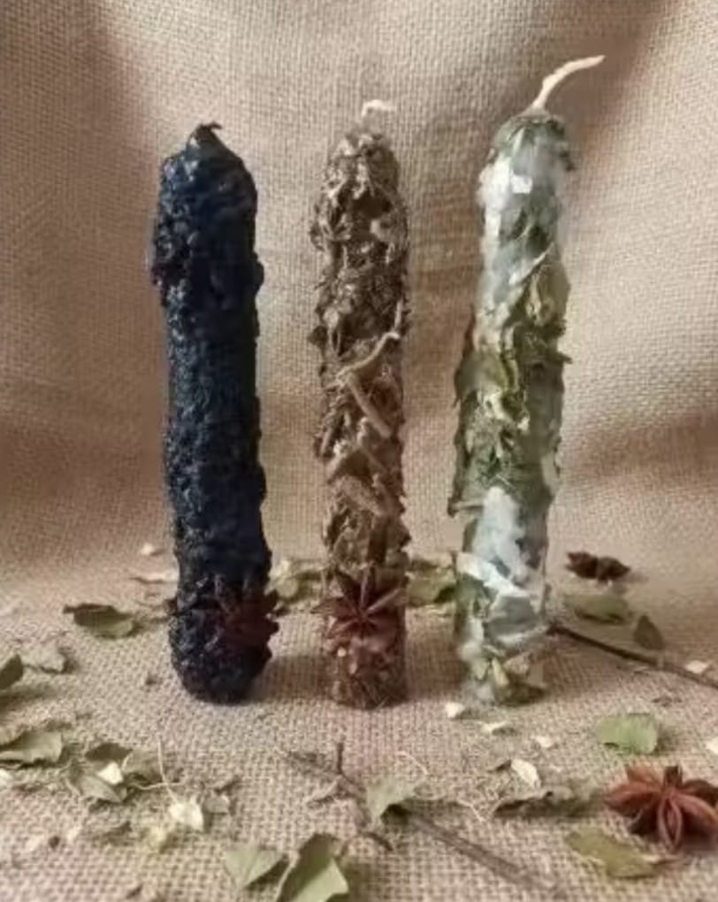

O elemento fogo · intenção, presença e transformação
VelasArtesanais
Luz, cera e propósito em criações feitas à mão para práticas de presença e direcionamento.
Ver na loja
NythraAteliê

“A vela é um pilar de luz que une a terra ao céu. Em sua chama, a intenção ganha presença e a matéria se torna símbolo.”— Tratado das chamas01 / Essência
O poder da chama
Mais do que luz e perfume, a vela ritualística é um ponto de concentração. Sua chama convida à presença, ilumina aquilo que precisa ser visto e representa o movimento de transformar uma intenção em gesto consciente.
No Nythra Ateliê, cada vela é produzida artesanalmente, vertida e preparada em pequenos lotes. Ceras, cores, ervas, aromas e símbolos são escolhidos de acordo com a finalidade da peça, respeitando o tempo e o fundamento de cada preparo.
Ao acendê-la, reserve alguns instantes para respirar, formular seu propósito e acompanhar a chama com atenção. A vela não substitui escolhas ou ações concretas: atua como suporte simbólico para oração, meditação, devoção e direcionamento pessoal.
Finalidades
e caminhos
Criações para acompanhar diferentes momentos, ritos e práticas de presença consciente.
Proteção e firmeza
Encerramento de ciclos
Abertura de caminhos
Prosperidade
Amor-próprio
Clareza e foco
Práticas devocionais
03 / Orientações
Uso consciente e segurança
Acenda sempre sobre uma superfície firme, resistente ao calor e longe de tecidos, papéis ou correntes de ar. Nunca deixe uma vela acesa sem supervisão e mantenha-a fora do alcance de crianças e animais. Siga as orientações da peça, especialmente quando houver ervas ou elementos decorativos próximos ao pavio.
Loja oficial
Acendaa sua intenção
Conheça as velas disponíveis e escolha uma criação alinhada ao momento que você deseja iluminar.
Ver velas na loja